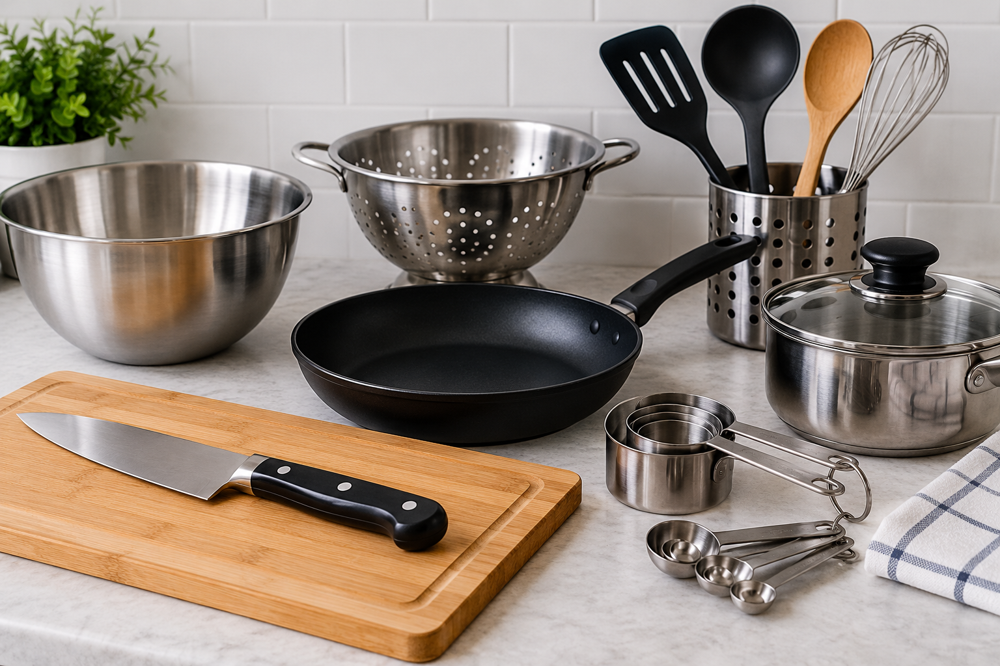

Essential Cooking Tools & Utensils
You don't need many tools to start cooking. A few essentials can make cooking easier and safer.

Chef's Knife
A chef's knife is useful for chopping, slicing and cutting ingredients. Its wide blade makes it suitable for preparing vegetables, meat and herbs. Beginners should practise cutting slowly and keep their fingers tucked away from the blade.
Cutting Board
A cutting board provides a safe, stable surface for preparing ingredients. Wooden and plastic boards are both common choices for home cooking. Use separate boards for raw meat and ready-to-eat foods to help prevent cross-contamination.
Frying Pan
A frying pan is used for cooking food with a small amount of oil or fat. It is suitable for frying, sautéing and searing ingredients such as eggs, vegetables and meat. Non-stick pans are beginner-friendly because they require less oil and are easier to clean.
Spatula
A spatula is used for flipping, turning and serving food. It is especially useful when cooking eggs, pancakes or delicate fish. Silicone spatulas are a good choice for non-stick pans because they are less likely to scratch the coating.
Wooden Spoon
Wooden spoons are great for stirring and mixing ingredients without scratching cookware. They are particularly useful when preparing sauces, soups and pasta dishes. Wash and dry them thoroughly after use to keep them in good condition.
Mixing Bowls
Mixing bowls are used for combining ingredients and preparing recipes. They come in different sizes, making them useful for everything from whisking eggs to mixing cake batter. Having a few different sizes makes cooking more convenient.
Measuring Cups & Spoons
Measuring cups and spoons help you measure ingredients accurately for recipes. Cups are useful for larger quantities, while spoons are ideal for smaller amounts such as salt, spices and baking powder. Accurate measurements are especially important when baking.
Colander
A colander is used for draining pasta, vegetables and other foods. Its small holes allow water to escape while keeping the food inside. You can also use it to rinse vegetables, fruit and canned beans before cooking.